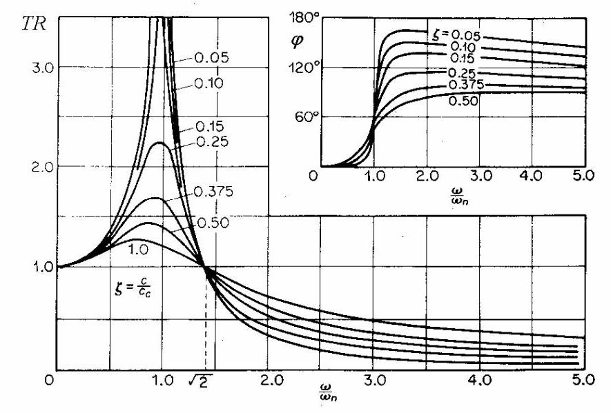
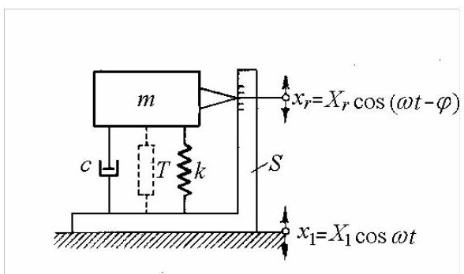
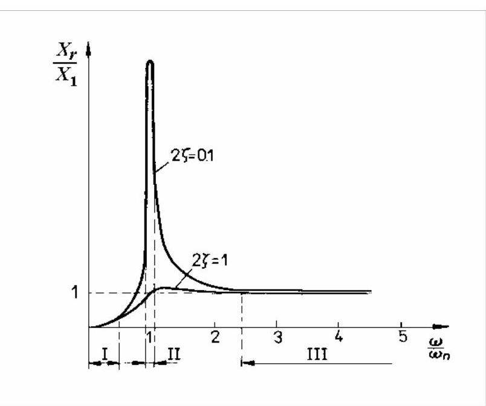
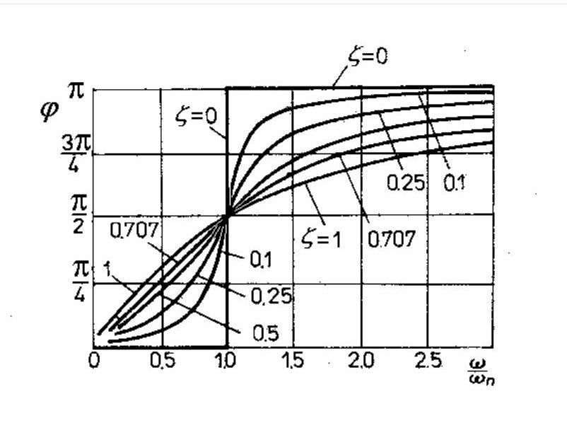
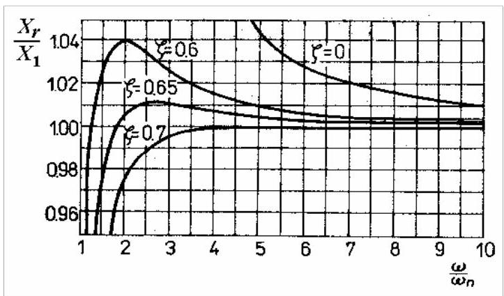

第11篇
2.4.9 阻尼系统中的传递率
若质量-弹簧-阻尼系统受到给定的基础运动\({x}_{1} = {X}_{1}{e}^{\mathrm{i}{\omega t}}\)激励，则传递到质量的运动为\({x}_{2} = {\bar{X}}_{2}{e}^{\mathrm{i}{\omega t}}\)，其中\({\bar{X}}_{2} = \left| {\bar{X}}_{2}\right| {e}^{-\mathrm{i}\varphi }\)为复振幅。其运动微分方程为
可整理为
振幅比为

图2.39
运动传递率为
相移由下式给出
式(2.102)和(2.103)在图2.39中针对不同阻尼比\(\zeta\)进行了图示。
当\(\omega /{\omega }_{n} > \sqrt{2},{TR}\)小于1时，如图2.17所示，但随着阻尼增加，传递率上升，意味着隔振性能恶化。降低阻尼并非良策，因为系统必须在\(\omega /{\omega }_{n} > \sqrt{2}\)区域运行，而为此需穿越共振区，此时振幅需由阻尼抑制。某些情况下，会设置轻微阻尼，并通过限位器或快速穿越共振来限制大振幅。
类似问题可针对基础固定的质量激励系统(图2.26)建立。若需隔离的驱动力为\({F}_{0}{e}^{\mathrm{i}{\omega t}}\)(2.73)，稳态复位移振幅为\(\bar{X}\)(2.74)，则通过弹簧与阻尼器传递的力亦为谐波，其振幅为
于是力传递率
由式(2.102)给出。
注意，通过弹簧与阻尼器传递的力相对于弹性力与阻尼力存在相移。
2.4.10 振动式仪器原理
振动测量有两种基本不同的仪器:a) 固定参考仪器或准静态装置，其振动运动是相对于某一固定参考点测量的；b) 振动式(seismic)仪器，其振动运动是相对于附加在振动结构上的质量-弹簧-阻尼器系统的质量来测量的。
振动式仪器(图2.40)由外壳\(S\)(刚性固定在振动系统上)、质量-弹簧-阻尼器\(m - k - c\)系统以及测量振动质量与外壳之间相对运动的传感器\(T\)组成。
假设振动系统(即仪器基座)作简谐运动
忽略瞬态项，质量\(m\)与外壳\(S\)之间的相对位移可表示为
质量\(m\)相对于固定参考点的绝对位移为
其绝对加速度为
质量\(m\)的运动方程可写成
或

图2.40
方程(2.108)具有稳态解，满足

图2.41

图2.42
图2.41给出了振幅比(2.109)随\(\omega /{\omega }_{n}\)变化的曲线，对应两种阻尼比。图2.42给出了相移\(\varphi\)随\(\omega /{\omega }_{n}\)变化的曲线。
根据所用频率范围，仪器可指示位移、速度或加速度。
测振仪。在区域III内，当\(\omega > > {\omega }_{n}\)时，可见\({X}_{r} \cong {X}_{1}\)，因此质量与外壳之间的相对运动\({X}_{r}\)(由传感器感知)与被测结构的位移\({X}_{1}\)几乎相同。图2.42表明，在此频率范围内，轻阻尼\(\left( {\zeta \rightarrow 0}\right)\)时的相移为\(\varphi = \pi\)，故外壳与质量\(m\)反相振动。相对于惯性坐标系(固定参考点)，质量\(m\)几乎保持静止(成为空间中的固定点)，而外壳的运动则相对于它进行测量。
当\(T\)为位移传感器时，该仪器即为振动式绝对位移拾取器(测振仪)。当\(T\)为速度传感器时，仪器则成为速度拾取器。
振动位移测量仪器应具有极低的固有频率(1至\(5\mathrm{\;{Hz}}\))，这通过\(k\)取较小值实现，即采用柔软的振动质量悬挂，并相应使用相对较大的质量\(m\)。
加速度计。在区间I内，当\(\omega < < {\omega }_{n}\)时，方程(2.109)变为
或
其中\({X}_{1}{\omega }^{2}\)为被测结构的加速度。
在此情况下，仪器测量与结构绝对加速度成正比的量，称为加速度计。其固有频率较高，通过小振动质量和硬弹簧实现。
在频率区间II，当\(\omega \cong {\omega }_{n}\)时，质量呈现大幅振动，该特性用于设计簧片式频率指示振动计及用于测量滚动轴承缺陷的加速度计。
幅值失真。为无失真地复现复杂信号，所有谐波分量必须沿频率轴被同等放大。若幅值比\({X}_{r}/{X}_{1}\)几乎恒定即可实现。因此，每个拾振器都给出频率响应范围，以使失真保持在规定限值内。
图2.43为图2.41的放大局部，绘制了四种阻尼比的曲线。阻尼比为\(\zeta = {0.7}\)的仪器响应曲线在\(\omega /{\omega }_{n} = 4\)以下保持水平。幅值失真给定位移测量仪器设定了下限频率。

图2.43
相位失真。为无形状变化地复现复杂信号，其谐波分量的相位必须沿时间轴被同等平移。若相位角\(\varphi\)随频率线性增加即可实现。
对于振动计，比值\(\omega /{\omega }_{n}\)相对较大，且对所有谐波\(\varphi\)≈\({180}^{0}\)，故无相位失真。对于加速度计，当阻尼比约为0.7时，相位角与频率呈近似线性关系，\(\varphi \cong \left( {\pi /2}\right) \left( {\omega /{\omega }_{n}}\right)\)。该阻尼值亦用于最小化仪器的瞬态响应。
Matlab Demo
以估计的pcb品牌某加速度计为例，给出参考的分析代码。这是是一个经典的、工作在“区域 I”的加速度计。其卓越性能的关键在于拥有一个远超其工作范围的极高自然频率，从而保证了在宽广频带内的测量精度和平坦响应。
%% 结合教科书理论与PCB参数的加速度计建模
% 清理工作区和命令窗口
clear; clc; close all;
%% 1. 定义估算的工业加速度计参数 (参考 PCB Piezotronics)
fprintf('--- 工业加速度计估算参数 (结合2.4.10节理论) ---\n');
fn = 25000; % 自然频率 (Hz), f_n. 对应 wn
zeta = 0.02; % 阻尼比 (Damping Ratio), ζ. 典型的轻阻尼
S_mV_per_g = 100;% 灵敏度 (mV/g), Sensitivity
% 单位转换
g = 9.81; % 重力加速度 (m/s^2)
S = (S_mV_per_g / 1000) / g; % 将灵敏度转换为 V/(m/s^2)
% 计算角频率
wn = 2 * pi * fn; % 自然角频率 (rad/s), ω_n
fprintf('自然频率 (fn): %d Hz\n', fn);
fprintf('阻尼比 (zeta): %.3f\n', zeta);
fprintf('灵敏度 (S): %d mV/g\n', S_mV_per_g);
fprintf('--------------------------------------------------\n\n');
%% 2. 建立加速度计的传递函数模型
% 根据教科书理论，仪器输出(电压)与内部相对位移 x_r 成正比，
% 而 x_r 由外部加速度 a_1 = x_1_ddot 驱动。
% V_out(s) / A_1(s) 的传递函数形式为: G(s) = S / (1 + 2*zeta*(s/wn) + (s/wn)^2)
% 等效于: G(s) = S * wn^2 / (s^2 + 2*zeta*wn*s + wn^2)
% 注意：实际物理模型带负号，G(s) = -S*wn^2 / ...，这会带来180度相移，
% 但在标准的dB振幅图上看不出区别。我们这里主要关注振幅特性。
num = S * wn^2;
den = [1, 2*zeta*wn, wn^2];
% 创建传递函数对象
accelerometer_tf = tf(num, den);
fprintf('加速度计传递函数模型已建立。\n');
disp(accelerometer_tf);
%% 3. 计算并绘制频率响应 (波德图)
% 创建一个新的图形窗口
figure('Name', '工业加速度计频率响应 (理论结合实际)', 'NumberTitle', 'off', 'Color', 'w');
% 设置波德图选项
bode_opts = bodeoptions;
bode_opts.Title.String = sprintf('加速度计频率响应 (fn = %d kHz, zeta = %.2f)', fn/1000, zeta);
bode_opts.Title.FontSize = 14;
bode_opts.FreqUnits = 'Hz'; % 设置频率单位为 Hz
bode_opts.Grid = 'on';
w = {1e-1, 1e5}; % 频率范围：0.1 Hz 到 100 kHz
% 绘制波德图
bodeplot(accelerometer_tf, w, bode_opts);
%% 4. 结合教科书术语对图进行分析和标记
% 获取绘图句柄
ax_handles = findall(gcf, 'type', 'axes');
ax_mag = ax_handles(2); % 振幅图
ax_phase = ax_handles(1); % 相位图
hold(ax_mag, 'on');
% --- 在振幅图上标记理论区域 ---
ylim_mag = get(ax_mag, 'YLim');
xlim_mag = get(ax_mag, 'XLim');
% 标记区域 I: 加速度计工作区
fill(ax_mag, [xlim_mag(1), fn/5, fn/5, xlim_mag(1)], [ylim_mag(1), ylim_mag(1), ylim_mag(2), ylim_mag(2)], ...
'g', 'FaceAlpha', 0.1, 'EdgeColor', 'none', 'DisplayName', '区域 I: 加速度计工作区 (ω << ωn)');
% 标记区域 II: 共振区
fn_range_start = fn/2;
fn_range_end = fn*2;
fill(ax_mag, [fn_range_start, fn_range_end, fn_range_end, fn_range_start], [ylim_mag(1), ylim_mag(1), ylim_mag(2), ylim_mag(2)], ...
'r', 'FaceAlpha', 0.1, 'EdgeColor', 'none', 'DisplayName', '区域 II: 共振区 (ω ≈ ωn)');
% 标记谐振峰
plot(ax_mag, [fn, fn], ylim_mag, 'r--', 'LineWidth', 1.2, 'DisplayName', sprintf('谐振频率 fn = %d kHz', fn/1000));
text(ax_mag, fn*0.9, ylim_mag(2)*0.6, '必须避免在此区域测量', 'Color', 'r', 'FontSize', 10, 'HorizontalAlignment', 'right');
% 更新图例
legend(ax_mag, 'show', 'Location', 'southwest', 'FontSize', 9);
hold(ax_mag, 'off');
%% 程序结束
fprintf('\n绘图完成。\n');
fprintf('该图展示了高性能加速度计如何在极宽的"区域 I"内实现平坦响应。\n');